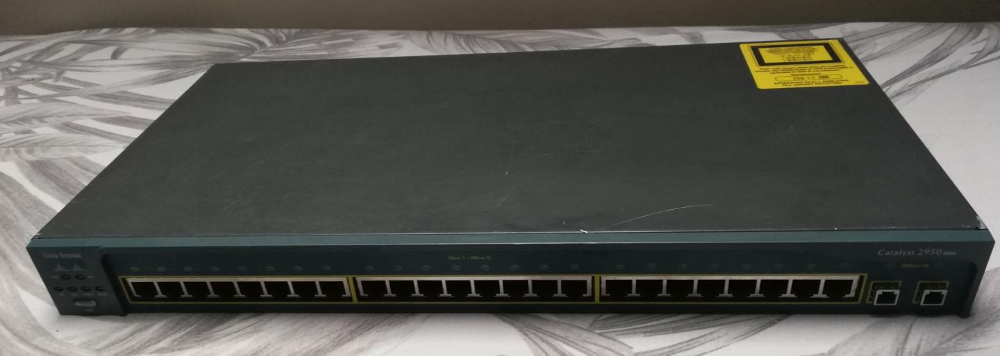

18.11.2021
Recenzja Cisco Catalyst 2950SX-24, czyli switch zarządzalny za 34zł.
Jakiś czas temu zakupiłem do nauki switcha zarządzalnego Cisco Catalyst 2950SX-24 w okazyjnej cenie 34zł. Po jego dostarczeniu i odpakowaniu okazało się, że switch ten został wyprodukowany w 2006 roku. Wizualnie poza otarciami na górnej pokrywie prezentuje się bardzo dobrze. Posiada 24 porty RJ-45 (+1 konsolowy) oraz 2 porty na światłowód. Oferuje on przepustowość 100Mb na portach RJ-45. Po podłączeniu do prądu bezproblemowo się uruchomił jednakże jest bardzo głośny w porównaniu do switchy do jakich byłem przyzwyczajony. Konfiguracja nie sprawiła mi większych problemów oprócz dostania się do strony konfiguracyjnej przez przeglądarkę. Taki sprzęt z pewnością przyda się każdemu kto chce dobrze zdać egzamin zawodowy EE.08.

06.10.2021
Windows 11 - moje odczucia
Dzisiaj postanowiłem dać szansę Windows 11. Sama aktualizacja przebiegła bezproblemowo. Po restarcie nowy Windows przywitał mnie odświeżonym interfejsem. Osobiście mi przypadł do gustu. Ciekawymi zmianami jest nowy, wyśrodkowany wygląd menu
Start. Jest według mnie schludne i estetyczne mimo iż średnio praktyczne w porównaniu do Windows 10. Odświeżony został również wygląd ikonek i eksploratora plików. Jednak trzeba spojrzeć rownież na wady nowego systemu a jest ich trochę. Po
pierwsze mogę przyczepić się do menu kontekstowego. O ile sam wygląd nowego menu jest poprawny to jego praktyczność jest wielce wątpliwa. Jest bardzo skromne w opcje a aby wybrać bardziej zaawansowane opcje trzeba wcisnąć przycisk aby pokazał
więcej opcji po czym pokazuje się dokładnie te same menu co w Windows 10. Oprócz tego Windows 11 ma dosyć wiele, drobnych błędów które skutecznie irytują użytkownika. Według mnie nowy system od Microsoftu ma potencjał , ale nie wykorzystuje go
w pełni. Ja niestety z powodów błędów postanowiłem wrócić do Windows 10, ale mam nadzieję że niedługo wrócę do "jedenastki".